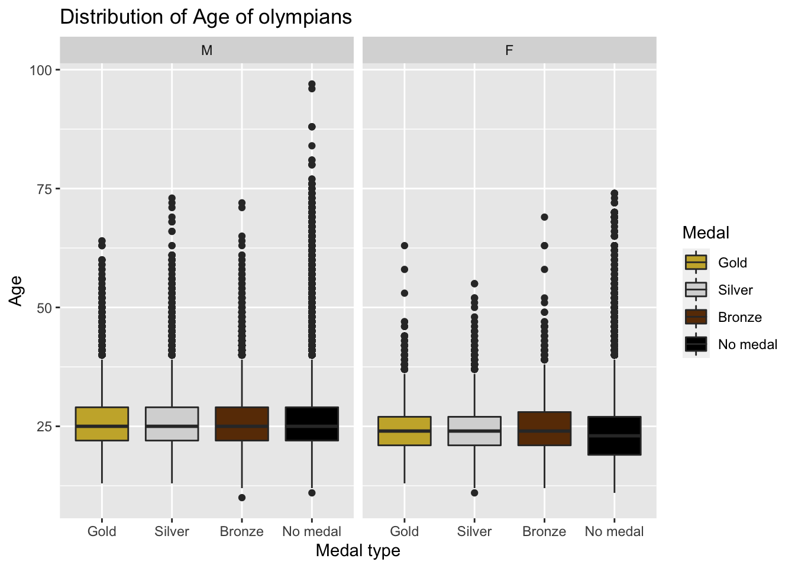
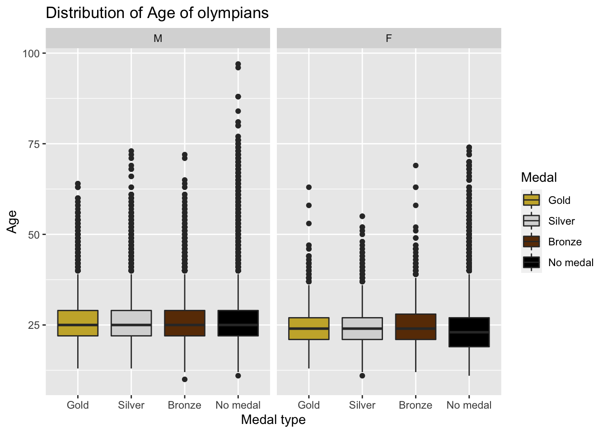

Chapter 7 Conclusion


 

 Initially we considered the plots from 1896 but since female participants were very less till 1912 and then there was first world war so we have decided to consider athletes from 1924 as were have sufficient data from that year onwards.
Initially we considered the plots from 1896 but since female participants were very less till 1912 and then there was first world war so we have decided to consider athletes from 1924 as were have sufficient data from that year onwards.
It is clearly evident from the above plot that Male athletes are taller and heavier than female athletes in general.
 In this plot we have compared the average weight and average height for athletes in 2016 Olympics in Gymnastics and Basketball. Also, Athletes who play Basketball are taller and heavier than who do Gymnastics.
In this plot we have compared the average weight and average height for athletes in 2016 Olympics in Gymnastics and Basketball. Also, Athletes who play Basketball are taller and heavier than who do Gymnastics.
17-year-old Brazilian gymnast Flavia Saraiva, is the lightest athletes at only 31kg (68 lbs) and she was also the shortest. Also, Basketball players are very tall and heavy.
## # A tibble: 1,400 × 6
## # Groups: Sport [56]
## Sex Age Height Weight Year Sport
## <dbl> <int> <dbl> <dbl> <int> <chr>
## 1 0 23 169 58 1976 Alpine Skiing
## 2 1 30 179 84 1992 Alpine Skiing
## 3 1 19 183 87 1968 Alpine Skiing
## 4 0 26 180 70 1994 Alpine Skiing
## 5 1 19 184 76 1960 Alpine Skiing
## 6 0 18 175 73 1998 Alpine Skiing
## 7 0 28 170 81 2010 Alpine Skiing
## 8 1 27 186 88 2006 Alpine Skiing
## 9 1 30 179 84 1992 Alpine Skiing
## 10 1 23 180 74 2010 Alpine Skiing
## # … with 1,390 more rows## # A tibble: 1,400 × 4
## Sex Age Height Weight
## <dbl> <int> <dbl> <dbl>
## 1 0 23 169 58
## 2 1 30 179 84
## 3 1 19 183 87
## 4 0 26 180 70
## 5 1 19 184 76
## 6 0 18 175 73
## 7 0 28 170 81
## 8 1 27 186 88
## 9 1 30 179 84
## 10 1 23 180 74
## # … with 1,390 more rows The dataset we are working on is the Olympic Games dataset that we scraped from http://www.olympedia.org/. It includes all the Games from Athens 1896 to Rio 2016. #The R code I used to scrape and wrangle the data is on GitHub.#
The dataset we are working on is the Olympic Games dataset that we scraped from http://www.olympedia.org/. It includes all the Games from Athens 1896 to Rio 2016. #The R code I used to scrape and wrangle the data is on GitHub.#
The file athlete_events.csv contains 271116 rows and 15 columns. Each row corresponds to an athlete competing in a particular Olympic event. The columns are: Identity - Unique number for each athlete Name - Athlete’s name Sex - M or F Age - Integer Height - In centimeters Weight - In kilograms Team - Team name NOC - National Olympic Committee 3-letter code Games - Year and season Year - Integer between 1896 to 2016 Season - Summer or Winter City - Host city Sport - Sport Event - Event Medal - Gold, Silver, Bronze, or NA
After 1992, the Winter and Summer Games were held in different years. Winter Games occurred every four years starting from 1994, and Summer Games occurred every four years beginning in 1996.
Plot-1 The above graph shows the participation of athletes from 1896 to 2016. Key Observations:- 1) Modern Olympics were first organized in Athens with all-male participants from 12 countries. Winter Olympics were introduced in 1924. 2) After 1992, the Winter and Summer Games were held in different years. Winter Games occurred every four years starting from 1994, and Summer Games occurred every four years beginning in 1996. 3) We can also observe that no Olympics were organized between 1912 to 1920 and 1936 to 1948 because of World War I and World War II. 4) During the Olympics at Los Angeles in 1932, the participation dipped because the Olympics were held during the great depression. 5) During the 1976 Olympics at Montreal, there was a dip in attendance because 25 nations decided to boycott the Olympics in retaliation for apartheid policies in South Africa. 6) During Olympics at Moscow in 1980, the number of Olympics who participated decreased because 66 nations decided to boycott the Olympics. 7) Winter Olympics have much less participation than summer Olympics because ice and snow sports are not practical or popular in most nations due to climate conditions. This doesn’t appear to change anytime soon. 8) 2016 Summer Olympics was held in Rio, and it had maximum participation.
Plot 2) The above plot is a boxplot of participants’ age from the Olympics in 1896 to 2016.
- the median age of male participants from 1896 to 2016 is between 23-26. And the median age remains almost constant.
- The Youngest Olympian of all time was Dimitrios Loundras of Greece, who at age 10 in 1896 won a bronze medal in gymnastics, which can be seen as an outlier in the year 1896.
- The oldest Olympian medalist of all time was a Swedish shooter Oscar Swahn, who was 72 years, 280 days old when he won a silver medal in the 1920 Olympics.
- Female Olympians were allowed after 1920, so there is no data for 1896. The median age of female Olympians first increases, then it stabilizes.
- Also, the spread of female participants is less than that of the male participants.
Plot 3)
Initially, we considered the plots from 1896, but since female participants were very few till 1912 and then there was the first world war, so we have decided to consider athletes from 1924 as were have sufficient data from that year onwards.
It is clearly evident from the above plot that Male athletes are taller and heavier than female athletes in general for all the Olympics from 1896 to 2016.
In this plot, we have compared the average weight and average height for athletes in the 2016 Olympics in Gymnastics and Basketball. Also, Athletes who play Basketball are taller and heavier than those who do Gymnastics.
17-year-old Brazilian gymnast Flavia Saraiva is the lightest athlete at only 31kg (68 lbs), and she was also the shortest. In general, Basketball players are very tall and heavy.
Plot 4) This plot is the distribution of different sports based on the average height and average weight for the athletes from 1896 to 2016. We can see that athletes playing sports like Tug of War, Basketball, Baseball, and Bobsleigh are some of the tallest and heaviest athletes. On the other end, athletes who do Gymnastics, Synchronized Swimming, Diving, Rhythmic Gymnastics are very light and short. And most of the sports lie in between the extreme ends like football, boxing, fencing.